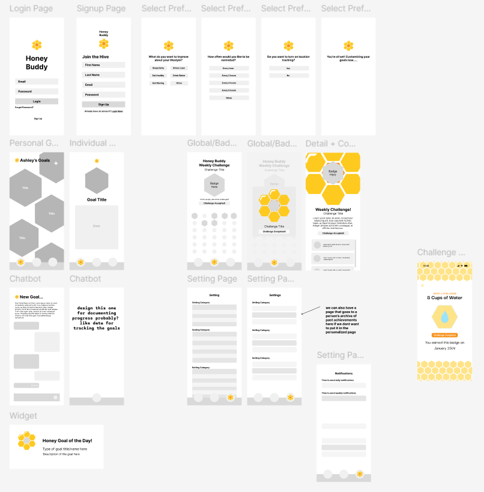

honeybuddy
design-a-thon winner
the project
With students’ busy schedules, including classes, career goals, work, and extracurriculars, they often find it difficult to maintain a healthy lifestyle, achieve goals, and balance everything else on top of their busy schedules. Further, AI has become more common, which gives rise to people using it for unethical reasons, such as using AI art instead of human-created art, cheating, and more.
HoneyBuddy aims to reduce friction and effort to achieve a healthier lifestyle while also combating the unethical usage of AI. It aims to create a community that promotes the building of good habits with the usage of AI and location tracking to give personalized daily reminders and recommendations to accomplish the user’s desired goals. Students are able to create personalized milestones through an AI chatbot and accomplish weekly global challenges to earn badges. This project was selected for the "Best User Interface" award at the 2025 Rice University Design-a-thon out of 100+ teams.
toolkit
Tools: Adobe Illustrator, Figma, Miro
my role
I played a key role in
Notable Contributions:
 created vector icons in Adobe Illustrator
created vector icons in Adobe Illustrator
designed wireframes and contributed to the final design
prototyped app in Figma
presented in a friendly but professional manner
ideation
We did most of our ideation using Miro, and started with just writing down key words that came to mind with the prompt.
Using the key words, we came up with various ideas for potential apps to make.
Then, we brainstormed potential questions to ask for our survey and interviews.
After we finalized everything and completed our user research (outline below), we created an app page structure.
user research
To understand our target audience better, we conducted survey and one-on-one interviews to find out how college students value and reflect on their current lifestyle and how they would watn to improve their habits and attitudes in the midst of the increased use of AI and technology in recent years. We received 47 responses to our survey and interviewed 11 students ranging from first-year to graduate students.
Our findings showed that while an overwhelming majority of students desire to improve their own lifestyles, they are oftentimes faced with the issue of not having enough time to fit better habits into their schedule (i.e. going to the gym, cooking to eat healthier, etc.). With this in mind, we designed HoneyBuddy to make it easier for busy students to find time in their days to build good habits. Some key features that were mentioned in the survey and interviews were:
informational notes about the effects of certain habits
gamification
reminders
streaks + ways to document routine (like daily check-ins)
style guide
To ensure that all of our styling was consistent, we created a style guide outlining the font choices as well as the color palette.
wireframes
Then, we quickly made wireframes of every possible page that we wanted to create
final design
+ back to projects +